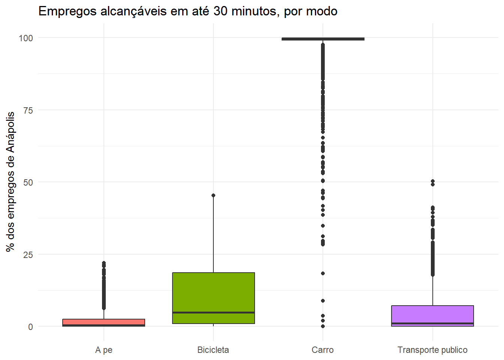
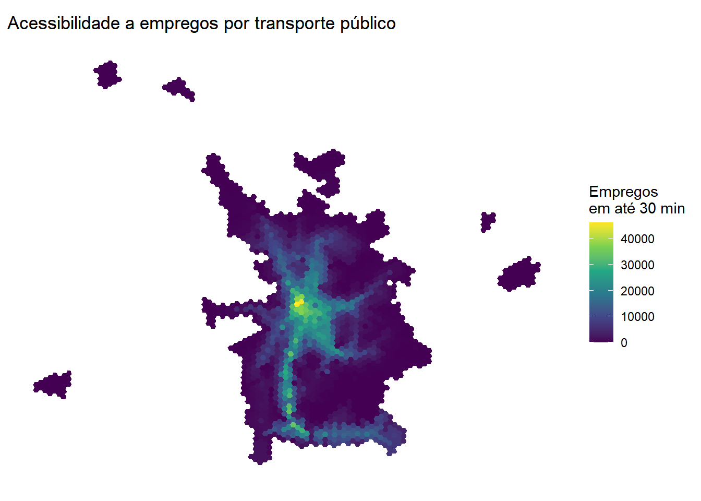
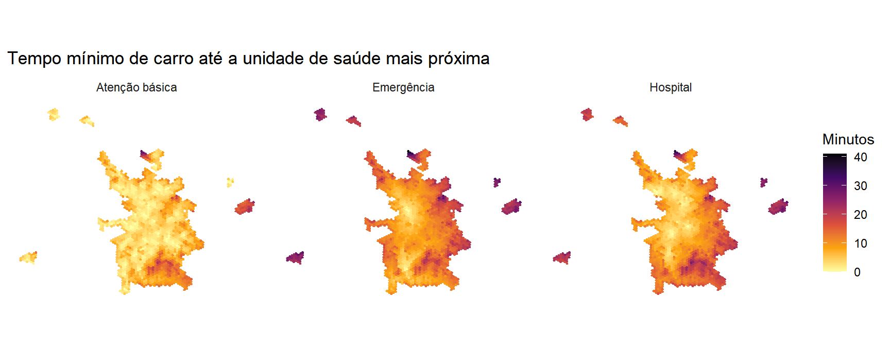

Com a rede construída, o caminho até um indicador de acessibilidade tem duas etapas. Primeiro se calcula quanto tempo se leva de cada origem a cada destino, o que produz uma matriz de tempos de viagem. Depois se combina essa matriz com a distribuição das oportunidades no território, o que produz o indicador. Este capítulo trata as duas etapas em separado, porque cada uma envolve decisões diferentes: a matriz de tempos depende de como cada modo é modelado (velocidade, relevo, estresse de tráfego, congestionamento), enquanto o indicador de acessibilidade depende de como se escolhe combinar tempo e oportunidades.
NotaNesta seção você vai
calcular matrizes de tempo de viagem para quatro modos, e explorar variações de cada uma (relevo, estresse de tráfego, congestionamento, dados do Visum)
calcular acessibilidade a empregos, cumulativa e por gravidade
calcular acessibilidade a saúde, pelo tempo mínimo até a unidade mais próxima e pela competição por vagas (FCA)
comparar tudo em gráficos e mapas
DicaScript deste capítulo
Abra o arquivo scripts/9-indicadores.R no projeto da oficina. É nele que vai o código apresentado a seguir. Se ainda não tiver o projeto, volte ao Capítulo 1.
Ele continua a sessão do capítulo anterior, então rode antes o scripts/8-rede.R, que deixa em memória a rede, a grade e os caminhos das pastas.
9.1 Matrizes de tempo de viagem
Uma matriz de tempo de viagem traz, para cada par origem-destino, quanto tempo se leva para ir de um ao outro por um modo específico. É o insumo de qualquer indicador de acessibilidade baseado em tempo, e cada modo tem uma forma diferente de ser modelado dentro do R5.
9.1.1 Pontos de origem e destino
Usamos o centroide de cada hexágono urbano como ponto de origem. Na maior parte deste capítulo, o destino também é o centroide desses mesmos hexágonos, mas isso não é uma regra fixa: mais adiante, na seção de custo mínimo, os destinos são as coordenadas reais das unidades de saúde, não hexágonos. Em qualquer um dos casos, o r5r espera um data.frame ou sf com colunas id, lon e lat, em WGS84.
id jobs population income atencao_basica capacidade_ab
1 89a8c04080bffff 0.000000 0.000000 NA 0 0
2 89a8c04081bffff 0.000000 0.000000 NA 0 0
3 89a8c040843ffff 0.000000 45.099237 1644.27 0 0
4 89a8c040847ffff 0.000000 0.000000 NA 0 0
5 89a8c04084bffff 1.387013 103.083969 1644.27 0 0
6 89a8c04084fffff 1.585366 2.900585 1900.42 0 0
hospital emergencia
1 0 0
2 0 0
3 0 0
4 0 0
5 0 0
6 0 0
O transporte público só tem viagens programadas em 22/07/2026, como visto no capítulo anterior, então essa data é usada também nos outros modos, por consistência. Para caminhada, bicicleta e carro o horário não muda o resultado por padrão, porque não há tabela de horários envolvida, mas o carro com dados do Visum, visto adiante, é uma exceção: os volumes de tráfego já embutem um recorte de horário.
data_viagem <-as.POSIXct("22-07-2026 07:00:00", format ="%d-%m-%Y %H:%M:%S")
O único parâmetro que muda o resultado aqui é max_trip_duration: sem tabela de horários e sem congestionamento, o tempo de caminhada de cada par origem-destino é fixo. Mas ele não é uma simples distância dividida por uma velocidade constante. No capítulo anterior, o build_network() recebeu elevation = "TOBLER", o que faz o R5 carregar o Anapolis.tif e recalcular o tempo de cada trecho da rede em função da declividade.
A relação usada é a função de caminhada de Tobler(Tobler, 1993):
em que \(W\) é a velocidade de caminhada em km/h e \(dh/dx\) é a declividade do trecho (a razão entre a variação de altitude e a distância horizontal). Em terreno plano (\(dh/dx = 0\)), a função resulta em aproximadamente 5 km/h; o pico de velocidade (por volta de 6 km/h) ocorre numa leve descida, e a velocidade cai de forma acentuada tanto em subidas fortes quanto em descidas muito íngremes. O R5 aplica essa velocidade trecho a trecho ao longo da rede viária, então dois pares origem-destino com a mesma distância em linha reta podem ter tempos de caminhada bem diferentes se um deles atravessa um terreno mais acidentado.
O max_lts define o nível de estresse de tráfego (Level of Traffic Stress, LTS) que um ciclista está disposto a enfrentar, numa escala de 1 a 4: LTS 1 é a mais conservadora (só vias bem protegidas do tráfego motorizado), e LTS 4 aceita qualquer via. O R5 infere o LTS de cada trecho a partir da velocidade, da hierarquia viária e da presença de infraestrutura cicloviária nas tags do OpenStreetMap. Usamos max_lts = 2 (vias de baixo a médio estresse), um valor comum na literatura para representar o ciclista médio, nem o mais cauteloso nem o mais tolerante a tráfego.
DicaSobrescrevendo o LTS com dados próprios
O r5r permite substituir a classificação de LTS inferida do OSM por valores próprios, por meio do argumento new_lts de travel_time_matrix(), de duas formas: um data.frame com colunas osm_id e lts, ou um objeto espacial de linhas (LINESTRING), caso em que o R5 localiza a via mais próxima de cada linha informada. Nesse segundo caso, as colunas exigidas são line_id (character), lts (integer), priority (integer, usado para desempatar quando duas linhas se sobrepõem na mesma via) e a geometria, que precisa se chamar literalmente geometry.
Isso é útil, por exemplo, para simular o efeito de uma ciclovia nova que ainda não está mapeada no OSM, ou para corrigir trechos classificados incorretamente. proposta_ciclo.gpkg traz uma rede cicloviária proposta para Anápolis, com um traçado simplificado (uma linha por corredor, não o detalhamento por segmento do OSM). Para testar o efeito dela na acessibilidade de bicicleta, basta assumir que toda essa rede proposta vira infraestrutura protegida, ou seja, LTS 1:
proposta_ciclo <-st_read(file.path(pasta_geo, "proposta_ciclo.gpkg"), quiet =TRUE)ttm_bike_ciclovia <-travel_time_matrix(r5r_network = r5r_network,origins = pontos,destinations = pontos,mode ="BICYCLE",departure_datetime = data_viagem,max_lts =2,max_trip_duration =60,new_lts = proposta_ciclo |>mutate(line_id =as.character(row_number()),lts =1L, # toda a rede proposta reclassificada como LTS 1priority =1L # desempate entre linhas sobrepostas; sem sobreposição real aqui ) |>select(line_id, lts, priority, geometry = geom))
Modifying LTS levels...
Warning: A scenario was used for this calculation. This may affect results for WALK or
BICYCLE due to missing elevation. See issue #555.
Comparar ttm_bike com ttm_bike_ciclovia mostra, em minutos, o ganho de acessibilidade de bicicleta que a rede cicloviária proposta traria.
9.1.5 Carro
Para o carro, três versões da mesma matriz são calculadas, cada uma representando um jeito diferente de lidar com congestionamento.
1. Fluxo livre. É o padrão do R5: cada trecho é percorrido na velocidade indicada pela via (limite de velocidade do OSM, ou uma estimativa por hierarquia viária quando a tag não existe), sem nenhum efeito de tráfego.
2. Congestionamento por hierarquia viária. O argumento new_carspeeds recebe um data.frame com colunas osm_id, max_speed e speed_type, e permite escalar (speed_type = "scale") ou fixar (speed_type = "km/h") a velocidade de trechos específicos. Uma forma simples de simular congestionamento sem nenhum dado externo é assumir que vias de hierarquia maior perdem mais velocidade em relação ao fluxo livre, por concentrarem mais tráfego:
Warning: A scenario was used for this calculation. This may affect results for WALK or
BICYCLE due to missing elevation. See issue #555.
3. Velocidades de um modelo macroscópico (Visum). Quando já existe um modelo de tráfego calibrado, como o modelo Visum de Anápolis distribuído em dados/geo/links_visum_anapolis.gpkg, faz mais sentido usar a velocidade que ele já estimou para cada trecho do que arbitrar um fator de escala. O modelo Visum tem sua própria malha de links, que não compartilha identificadores com a malha OSM usada pelo R5, então a ligação entre as duas é espacial: para cada via do OSM, busca-se o link do Visum mais próximo e usa-se a velocidade corrente dele (VCur_PrTSys_CAR, que já reflete o volume alocado no modelo, e não a velocidade de fluxo livre).
links_visum <-st_read(file.path(pasta_geo, "links_visum_anapolis.gpkg"), quiet =TRUE)# confira sempre os nomes de coluna: podem variar conforme a versão da exportação do Visumnames(links_visum)
Cada via aparece duas vezes nesse arquivo, uma por sentido (No repetido, FromNodeNo/ToNodeNo invertidos), com a mesma geometria e velocidades diferentes entre si. Como o pareamento com o OSM não distingue sentido, tirar a média das duas velocidades antes de parear evita que o resultado dependa de qual sentido o pareamento escolher:
Warning: A scenario was used for this calculation. This may affect results for WALK or
BICYCLE due to missing elevation. See issue #555.
Nota
“Mais próximo” no st_nearest_feature() significa só a menor distância entre as duas geometrias, não que elas percorrem o mesmo trajeto. Um trecho curto de OSM perto de um cruzamento, por exemplo, pode acabar pareado com o link do Visum de uma rua transversal, só porque ela passa mais perto naquele ponto específico, mesmo representando uma via diferente. Para um estudo publicável, vale um pareamento mais cuidadoso, que leve em conta a sobreposição ao longo de todo o trecho, não só a distância num ponto. Para o objetivo didático daqui, o resultado já mostra como conectar a saída de uma modelagem macroscópica ao roteamento do R5.
Com essas três matrizes, é possível comparar não só a acessibilidade de carro em condições ideais, mas também sob duas hipóteses diferentes de congestionamento, uma arbitrária e outra baseada em simulação de tráfego real.
9.1.6 Transporte público
Para transporte público, o modo de acesso e egresso a pé ("WALK") é combinado com "TRANSIT", e a chamada tem mais parâmetros relevantes do que os outros três modos, porque o resultado depende de uma tabela de horários:
mode = c("WALK", "TRANSIT"): define os modos de acesso, transferência e viagem no veículo. mode_egress (não usado aqui, e cujo padrão já é "WALK") controla separadamente o trecho a pé até o destino final, e poderia ser trocado por "BICYCLE" para simular quem pedala até a estação mas anda até o ponto de embarque, por exemplo.
time_window = 30: em vez de rotear uma única vez às 07:00, o R5 sorteia vários horários de partida dentro da janela de 30 minutos seguintes (draws_per_minute, com padrão de 5 sorteios por minuto do horário de partida), para não depender de pegar exatamente o minuto de um ônibus passando. O resultado reportado é o percentil 50 dessas simulações (percentiles, com padrão 50), ou seja, a mediana do tempo de viagem dentro da janela. Janelas maiores deixam a estimativa mais robusta a variações de horário, mas também mais lentas de calcular; 30 minutos é um equilíbrio razoável para uma aula.
max_walk_time = 30: limite de tempo a pé em qualquer trecho a pé da viagem (acesso, transferência ou egresso), não só o trecho até a primeira parada.
max_trip_duration = 90: teto para a viagem inteira, incluindo espera e transferências.
Outros parâmetros não usados aqui, mas que valem conhecer: max_rides (padrão 3, número máximo de embarques numa mesma viagem) e fare_structure/max_fare, que permitem levar em conta o custo da passagem e não só o tempo, caso se tenha uma estrutura tarifária mapeada para o sistema.
9.2 Acessibilidade
Com as matrizes de tempo de viagem calculadas, o próximo passo é combiná-las com a distribuição das oportunidades no território. Usamos as quatro matrizes de base, a pé, bicicleta (LTS 2), carro (fluxo livre) e transporte público, para manter a comparação entre modos simples; as variações de relevo, congestionamento e Visum vistas acima podem entrar nas mesmas funções abaixo, bastando trocar a matriz de entrada.
As duas primeiras medidas, cumulativa e por gravidade, usam empregos como oportunidade e são baseadas em lugares: cada hexágono recebe um valor de acessibilidade, sem levar em conta que vários hexágonos competem pelas mesmas vagas de emprego ou pelas mesmas vagas de atendimento de saúde. As duas últimas, custo mínimo e medidas com competição, trazem as unidades de saúde do capítulo anterior para dentro da conta, e a segunda corrige exatamente essa limitação.
Quantos empregos são alcançáveis em até 30 minutos, por hexágono, em cada modo? Usamos accessibility::cumulative_cutoff(), que espera a coluna de custo travel_time_p50, o tempo mediano de viagem dentro da janela usada.
Em vez de fixar 30 minutos, o cumulative_cutoff() aceita um vetor em cutoff e calcula a acessibilidade para todos os cortes de uma vez, numa tabela só (uma linha por hexágono e por corte):
Para resumir a acessibilidade dentro de uma faixa de tempo, em vez de um ponto ou de vários pontos separados, o accessibility::cumulative_interval() calcula minuto a minuto dentro do intervalo informado e resume o resultado com uma função (mediana, por padrão): interval = c(40, 60) dá a acessibilidade típica entre 40 e 60 minutos, por exemplo.
Juntando os quatro resultados em uma única tabela, para comparar. Como o número absoluto de empregos alcançáveis depende do tamanho da cidade, o resultado também é expresso como percentual do total de empregos de Anápolis, o que facilita a leitura e a comparação com outros municípios.
total_empregos <-sum(uso_solo$jobs)acess_modos <-bind_rows( acess_pe |>mutate(modo ="A pe"), acess_bike |>mutate(modo ="Bicicleta"), acess_carro |>mutate(modo ="Carro"), acess_tp |>mutate(modo ="Transporte publico")) |>mutate(jobs_pct = jobs / total_empregos *100)ggplot(acess_modos, aes(x = modo, y = jobs_pct, fill = modo)) +geom_boxplot(show.legend =FALSE) +labs(title ="Empregos alcançáveis em até 30 minutos, por modo",x =NULL, y ="% dos empregos de Anápolis" ) +theme_minimal()

E em mapa, para o transporte público.
grade_urbana |>left_join(acess_tp, by =c("id_hex"="id")) |>ggplot() +geom_sf(aes(fill = jobs), color =NA) +scale_fill_viridis_c(name ="Empregos\nem até 30 min") +theme_minimal() +theme(axis.text =element_blank(),axis.ticks =element_blank(),panel.grid =element_blank() ) +labs(title ="Acessibilidade a empregos por transporte público")

9.2.2 Acessibilidade por gravidade
A abordagem de oportunidades cumulativas usa um corte rígido, em que 30 minutos “conta” e 31 minutos “não conta”. Uma alternativa é ponderar as oportunidades pelo tempo de viagem com uma função de decaimento, por exemplo uma decaída exponencial, em que oportunidades mais distantes pesam cada vez menos.
Outras funções de decaimento disponíveis no accessibility são decay_binary(), decay_linear(), decay_logistic(), decay_power() e decay_stepped(), todas documentadas em ?decay_exponential e na vinheta de funções de decaimento do pacote. O parâmetro de decaimento (decay_value) usado aqui foi arbitrário; na prática, ele costuma ser calibrado a partir de dados observados, por exemplo uma pesquisa origem-destino, ajustando a função à distribuição real dos tempos de viagem.
9.2.3 Custo mínimo (proximidade)
Nem toda pergunta de acessibilidade é “quantas oportunidades é possível alcançar”. Para serviços de saúde, principalmente hospital e emergência, a pergunta mais comum é outra: quanto tempo se leva até a unidade mais próxima? O accessibility::cost_to_closest() responde isso a partir de uma matriz de tempos, e são duas possibilidades: uma contagem de oportunidades por zona ou roteando direto até a cordenada real de cada estabelecimento, guardada em unidades_saude. Isso evita a imprecisão de considerar a localização da unidade no centroide do hexágono.
Usamos a matriz de carro em fluxo livre, porque tempo de resposta a uma emergência é naturalmente pensado em termos de deslocamento motorizado, e porque hospital e emergência têm poucas unidades no município (9 e 3), o que deixaria tempos a pé ou por transporte público estourando o max_trip_duration em boa parte da cidade.
Com a matriz origem-hexágono → destino-estabelecimento em mãos, o tempo até a unidade mais próxima de cada tipo é só o mínimo entre os estabelecimentos daquele tipo, por hexágono de origem:
tempo_min_saude <- ttm_saude |>left_join(pontos_saude |>select(id, tipo), by =c("to_id"="id")) |>summarise(travel_time_p50 =min(travel_time_p50, na.rm =TRUE),.by =c(from_id, tipo) ) |>mutate(tipo =case_when( tipo =="atencao_basica"~"Atenção básica", tipo =="hospital"~"Hospital", tipo =="emergencia"~"Emergência" ) )
Mapeando lado a lado, a diferença de escala entre atenção básica e as outras duas categorias, já sugerida pelo mapa de pontos do capítulo anterior, fica explícita em minutos:
grade_urbana |>left_join(tempo_min_saude, by =c("id_hex"="from_id")) |>ggplot() +geom_sf(aes(fill = travel_time_p50), color =NA) +scale_fill_viridis_c(name ="Minutos", option ="inferno", direction =-1) +facet_wrap(~tipo) +theme_minimal() +theme(axis.text =element_blank(),axis.ticks =element_blank(),panel.grid =element_blank() ) +labs(title ="Tempo mínimo de carro até a unidade de saúde mais próxima")

A atenção básica está desenhada para estar perto de todo mundo, então o tempo mínimo tende a ser curto e parecido em toda a cidade. Hospital e emergência se concentram perto do centro, então o tempo mínimo cresce rápido conforme o hexágono se afasta dali, o tipo de padrão que costuma reacender a discussão sobre onde abrir a próxima UPA.
9.2.4 Medidas com competição
As medidas anteriores tratam cada hexágono como se ele fosse o único disputando as oportunidades ao redor. Na prática, um posto de saúde com poucos profissionais atende a um número limitado de pacientes, e hexágonos vizinhos concorrem entre si por essa mesma capacidade. As medidas da família floating catchment area (FCA) (Herszenhut & Pereira, 2024) corrigem isso: para cada unidade de oferta, calculam uma razão oferta/demanda dentro de um raio de alcance, e depois somam essas razões para cada hexágono que consegue alcançar aquela unidade.
Usamos capacidade_ab (soma de profissionais por hexágono, calculada no capítulo anterior) como oferta, população como demanda, e a mesma matriz de carro usada acima, para manter a comparação consistente com o custo mínimo:
O method = "2sfca" implementa a versão original de duas etapas (two-step floating catchment area), e decay_binary(cutoff = 15) define o raio de alcance em 15 minutos: dentro dele, a unidade conta; fora, não conta nada. O resultado é um índice de profissionais por habitante “efetivamente alcançável”, não a simples contagem de profissionais no hexágono.
A coluna resultante do floating_catchment_area() também se chama capacidade_ab (o nome vem do argumento opportunity), igual à coluna de oferta bruta já presente em grade_urbana. Para evitar essa colisão de nomes no left_join(), ela é renomeada antes de entrar no mapa:
O accessibility também traz method = "bfca", a versão balanceada (balanced floating catchment area), que corrige uma tendência do 2SFCA de inflar a demanda em catchments sobrepostos. A troca é só no argumento method, mantendo os demais parâmetros iguais.
Com a acessibilidade calculada para os quatro modos, e complementada pelas medidas de proximidade e competição em saúde, o próximo passo é olhar para quem se beneficia mais ou menos dela.
Tobler, W. (1993). Three Presentations on Geographical Analysis and Modeling: Non-isotropic Geographic Modeling; Speculations on the Geometry of Geography; and Global Spatial Analysis (Technical Report N. 93-1). National Center for Geographic Information; Analysis (NCGIA), University of California, Santa Barbara.